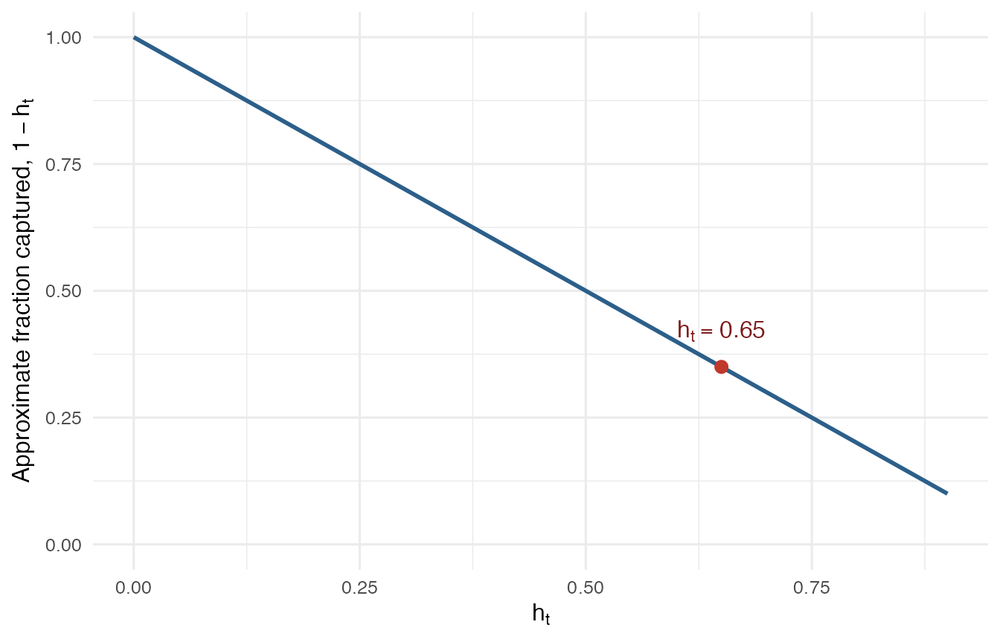
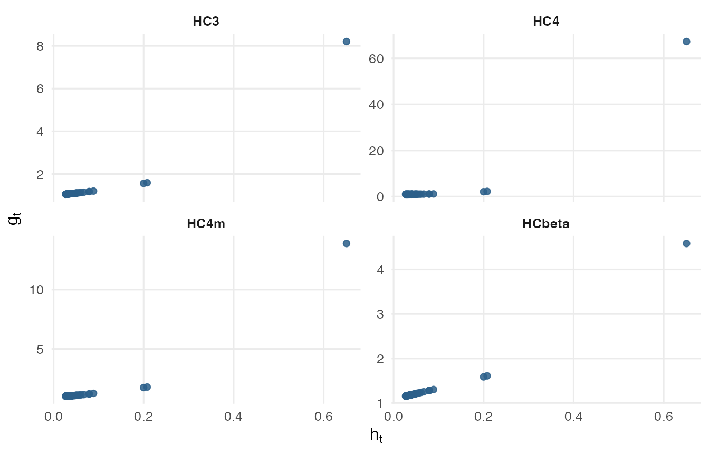

This vignette explains the methodology behind the HC covariance
estimators implemented in hcinfer. It is written for users
who want to understand what the estimators correct, why leverage
matters, and how HCbeta is constructed.
The focus is methodological rather than procedural. For a usage
oriented introduction, see
vignette("introduction", package = "hcinfer"). For code
that compares estimators on one fitted model, see
vignette("hcinfer-comparison", package = "hcinfer").
The model and the target covariance matrix
Consider the linear regression model
y = X \beta + e,
where y is an n \times 1 response vector, X is an n \times p design matrix with full column rank and p < n, \beta is a p \times 1 parameter vector, and the errors satisfy E(e_t) = 0 and \operatorname{Var}(e_t) = \sigma_t^2. The error covariance matrix is
\Omega = \operatorname{diag}(\sigma_1^2, \ldots, \sigma_n^2).
The ordinary least squares estimator is
\hat\beta = (X'X)^{-1} X'y.
The covariance matrix that drives tests and confidence intervals is
\Psi = \operatorname{Var}(\hat\beta) = (X'X)^{-1} X' \Omega X (X'X)^{-1}.
Under homoskedasticity, \Omega = \sigma^2 I_n and the target reduces to the usual scalar variance estimator times (X'X)^{-1}. Under heteroskedasticity, the diagonal entries of \Omega can differ across observations. The classical homoskedastic formula is then no longer appropriate for inference.
The difficulty is that \Omega contains n unknown variances but there is only one observation at each index. HC estimators avoid modeling the variance function directly. They estimate the aggregate quantity X' \Omega X through a weighted residual outer product.
The sandwich form
All estimators in hcinfer use the same sandwich
structure:
\widehat\Psi_{HC} = (X'X)^{-1} X' \widehat\Omega X (X'X)^{-1}, \qquad \widehat\Omega = \operatorname{diag}(\hat e_t^2 g_t),
where \hat e_t = y_t - x_t'\hat\beta is the OLS residual and g_t is an adjustment factor. The methods differ only in the definition of g_t.
The role of g_t is to correct the fact that squared OLS residuals tend to be too small as estimates of local error variances. That shrinkage is tied to leverage.
The hat matrix and leverage
The hat matrix is
H = X(X'X)^{-1}X', \qquad \hat y = Hy, \qquad \hat e = (I_n - H)y.
Only the diagonal of H enters the HC adjustment factors. The leverage of observation t is
h_t = H_{tt} = x_t'(X'X)^{-1}x_t, \qquad 0 \leq h_t \leq 1.
The average leverage is
\bar h = p / n.
Leverage is a property of the design matrix. It measures how unusual the regressor vector x_t is relative to the fitted design. It is computed before looking at the response values.
This is distinct from influence. An observation is influential when its removal substantially changes the fitted coefficients. Influence depends on both leverage and the response value. HC covariance estimators focus on leverage because the residual shrinkage they correct is a geometric property of the OLS projection.
Residual compression
The OLS residual vector is obtained by projecting y with I_n - H. For the diagonal terms, a useful approximation is
E(\hat e_t^2) \approx (1 - h_t)\sigma_t^2.
Thus \hat e_t^2 tends to capture only a fraction 1 - h_t of the local error variance. When leverage is large, the fitted value is pulled toward the observed response at that design point, and the residual is compressed.
The figure below shows the approximation as a function of h_t.
compression <- data.frame(
leverage = seq(0, 0.9, length.out = 100)
)
compression$fraction <- 1 - compression$leverage
high_leverage_point <- data.frame(
leverage = 0.65,
fraction = 0.35
)
ggplot2::ggplot(compression, ggplot2::aes(x = leverage, y = fraction)) +
ggplot2::geom_line(color = "#2c5f8a", linewidth = 1) +
ggplot2::geom_point(
data = high_leverage_point,
color = "#c0392b",
size = 2.6
) +
ggplot2::annotate(
"text",
x = 0.65,
y = 0.42,
label = "h[t] == 0.65",
parse = TRUE,
hjust = 0.5,
color = "#7f1d1d"
) +
ggplot2::scale_x_continuous(limits = c(0, 0.9)) +
ggplot2::scale_y_continuous(limits = c(0, 1)) +
ggplot2::labs(
x = expression(h[t]),
y = expression("Approximate fraction captured, " * 1 - h[t])
) +
ggplot2::theme_minimal(base_size = 12)
This is why HC estimators use leverage even when the analyst is not doing an influence analysis. The adjustment concerns the expected size of the squared residual, not the decision to keep or remove an observation.
The classical HC family
The supported classical estimators can be described by their adjustment factors g_t. Let u_t = 1 - h_t, \bar h = p/n, and h_{max} = \max(h_1, \ldots, h_n).
library(hcinfer)
hc_methods()
#> # A tibble: 9 × 4
#> type label description default_arguments
#> <chr> <chr> <chr> <chr>
#> 1 hc0 HC0 White heteroskedasticity-consistent estimator. none
#> 2 hc1 HC1 HC0 with degrees-of-freedom scaling. none
#> 3 hc2 HC2 Leverage-adjusted estimator with exponent 1. none
#> 4 hc3 HC3 Leverage-adjusted estimator with exponent 2. none
#> 5 hc4 HC4 Adaptive leverage correction by Cribari-Neto. none
#> 6 hc4m HC4m Modified HC4 correction by Cribari-Neto and d… none
#> 7 hc5 HC5 High-leverage correction by Cribari-Neto, Sou… k = 0.7
#> 8 hc5m HC5m Modified HC5 correction by Li, Zhang, Zhang, … k = 0.7, k1 = 1,…
#> 9 hcbeta HCbeta Beta-distribution leverage correction. c1 = 7, c2 = 0.7…The main formulas are:
\begin{aligned} HC0: \quad & g_t = 1, \\ HC1: \quad & g_t = \frac{n}{n - p}, \\ HC2: \quad & g_t = \frac{1}{1 - h_t}, \\ HC3: \quad & g_t = \frac{1}{(1 - h_t)^2}, \\ HC4: \quad & g_t = (1 - h_t)^{-\delta_t}, \quad \delta_t = \min\left(4, \frac{h_t}{\bar h}\right), \\ HC4m: \quad & g_t = (1 - h_t)^{-\delta_t}, \quad \delta_t = \min\left(1, \frac{h_t}{\bar h}\right) + \min\left(1.5, \frac{h_t}{\bar h}\right). \end{aligned}
HC0 uses the squared residuals without a leverage correction. HC1 adds a degrees of freedom scale factor. HC2 corrects the leading leverage term. HC3 uses a stronger correction related to leave one out reasoning. HC4 and HC4m adapt the exponent to the leverage relative to its average.
HC5 and HC5m
HC5 and HC5m target high leverage designs more directly. In
hcinfer, the HC5 adjustment is
g_t = (1 - h_t)^{-\delta_t}, \qquad \delta_t = \min\left( \frac{h_t}{\bar h}, \max\left(4, k \frac{h_{max}}{\bar h}\right) \right), \qquad k = 0.7.
The HC5m adjustment combines the HC4m structure with the HC5 term:
\begin{aligned} g_t &= (1 - h_t)^{-\delta_t}, \\ \delta_t &= k_1 \min\left(\gamma_1, \frac{h_t}{\bar h}\right) + k_2 \min\left(\gamma_2, \frac{h_t}{\bar h}\right) \\ &\quad + k_3 \min\left( \frac{h_t}{\bar h}, \max\left(4, k \frac{h_{max}}{\bar h}\right) \right), \end{aligned}
with defaults k = 0.7, k_1 = 1, k_2 = 0, k_3 = 1, \gamma_1 = 1, and \gamma_2 = 1.5.
These constants are exposed through ... in
vcov_hc() and hcinfer(). They should usually
be left at their defaults unless the analysis is explicitly a
sensitivity check or a methodological comparison.
Overshooting
Large leverage can make powers of 1 - h_t very small. Since the HC factors divide by these powers, the adjustment can become much larger than the residual compression it was meant to correct. This can inflate standard errors and move the inference too far in the opposite direction from HC0.
The pattern is visible in the public schools example used throughout the package.
schools <- PublicSchools
schools$income_scaled <- schools$income / 10000
schools$income_scaled_sq <- schools$income_scaled^2
fit <- lm(expenditure ~ income_scaled + income_scaled_sq, data = schools)
methods <- c("hc3", "hc4", "hc4m", "hcbeta")
weight_data <- purrr::map(methods, function(method) {
cov <- vcov_hc(fit, type = method)
data.frame(
method = cov$label,
leverage = unname(cov$leverage),
weight = unname(cov$weights)
)
})
weight_data <- do.call(rbind, weight_data)
weight_data$method <- factor(
weight_data$method,
levels = c("HC3", "HC4", "HC4m", "HCbeta")
)
ggplot2::ggplot(weight_data, ggplot2::aes(x = leverage, y = weight)) +
ggplot2::geom_point(color = "#2c5f8a", alpha = 0.85, size = 1.8) +
ggplot2::facet_wrap(~method, scales = "free_y", ncol = 2) +
ggplot2::labs(
x = expression(h[t]),
y = expression(g[t])
) +
ggplot2::theme_minimal(base_size = 12) +
ggplot2::theme(
panel.grid.minor = ggplot2::element_blank(),
strip.text = ggplot2::element_text(face = "bold")
)
The vertical scales differ by panel because the methods can produce adjustment factors of very different sizes.
HCbeta motivation
HCbeta starts from the identity
1 - h_t = F_U(1 - h_t),
where F_U is the cumulative distribution function of a Uniform(0, 1) random variable. This observation recasts the classical leverage complement as a cdf value on [0, 1].
The HCbeta estimator replaces the uniform cdf with the Beta cdf,
F_B(x; a, b) = I_x(a, b),
where I_x(a, b) is the regularized
incomplete beta function. In R this is pbeta(x, a, b).
This does not assume that the leverage complements follow a Beta distribution. The Beta distribution is used as a parametric cdf for constructing the adjustment factor. Its support matches the support of 1 - h_t, and its shape parameters allow the adjustment curve to depart from the uniform baseline.
HCbeta construction
HCbeta uses the sandwich form with
g_t = \frac{n}{n - p} \left\{\frac{1}{F_B(w_t; \tilde a, \tilde b)}\right\}^{c_1/n^{c_2}}, \qquad c_1 = 7, \qquad c_2 = 0.75.
The construction has four steps.
Step 1: truncate leverage complements
Define
w_t = \max\{0.01, \min(1 - h_t, 0.99)\}.
The lower bound prevents numerical explosion when h_t is close to 1. The upper bound keeps the
values away from the boundary when leverages become small in large
samples. In hcinfer, these limits can be changed with
lower and upper.
Step 2: estimate Beta shape parameters by moments
The method of moments estimates the mean and variance of the truncated complements:
\hat\mu = \frac{1}{n}\sum_{t=1}^{n} w_t, \qquad s_w^2 = \frac{1}{n - 1}\sum_{t=1}^{n}(w_t - \hat\mu)^2.
In the mean precision parameterization,
\hat\phi = \frac{\hat\mu(1 - \hat\mu)}{s_w^2} - 1, \qquad \hat a = \hat\mu \hat\phi, \qquad \hat b = (1 - \hat\mu) \hat\phi.
This is an estimating device, not a distributional assumption about the leverages.
Step 3: shrink toward the uniform cdf
Small samples can make moment estimates unstable. HCbeta shrinks the estimated shape parameters toward the uniform case a = b = 1:
\zeta = \frac{n}{n + 50}, \qquad \tilde a = (1 - \zeta) + \zeta \hat a, \qquad \tilde b = (1 - \zeta) + \zeta \hat b.
For smaller n, \zeta is smaller and the method stays closer to the uniform baseline. As n grows, the estimated shape parameters receive more weight.
Step 4: use a decaying exponent
The exponent c_1/n^{c_2} decreases with n. With the defaults, it is 7/n^{0.75}. This keeps the correction active in samples where leverage imbalance is more consequential and makes the adjustment vanish asymptotically. As n \to \infty with fixed p, g_t \to 1 and HCbeta recovers the HC0 structure.
When \tilde a = \tilde b = 1 and c_1 = 0, HCbeta reduces exactly to HC1. This identity is a useful implementation check.
Normal Wald inference
hcinfer() uses the selected HC covariance estimator to
form coefficient level normal Wald tests. For
H_0: \beta_j = \beta_j^{(0)},
the statistic is
z_j = \frac{\hat\beta_j - \beta_j^{(0)}} {\sqrt{[\widehat\Psi_{HC}]_{jj}}}.
The reference distribution is the standard normal distribution. A two sided test rejects at level \alpha when
|z_j| > z_{1 - \alpha / 2}.
The corresponding confidence interval is
\hat\beta_j \pm z_{1 - \alpha / 2} \sqrt{[\widehat\Psi_{HC}]_{jj}}.
Student t quantiles and bootstrap intervals are not used by
hcinfer().
Practical guidance
HCbeta is the default estimator in hcinfer(). It is
designed to keep the leverage correction active without letting the
largest adjustment factors grow too quickly in high leverage
designs.
For applied work, a useful workflow is:
- Fit the OLS model with
lm(). - Run
hcinfer(fit)for the default HCbeta analysis. - Inspect
summary(result)and the coefficient table fromtests(result). - Use
plot(vcov_hc(fit))to see leverage values and adjustment factors. - Compare HCbeta with one or more classical estimators when conclusions depend on the reported standard errors.
Large leverage is not, by itself, a reason to remove an observation. It indicates that squared residuals at that design point are compressed by the OLS projection. Influence diagnostics answer a different question about how much the fitted coefficients change when an observation is removed.
Implementation notes
The package does not need to form the full hat matrix to compute leverage. The leverages can be obtained from a QR decomposition of the model matrix by summing the squared entries in each row of the orthonormal factor.
HCbeta uses stats::pbeta() for the Beta cdf. The
incomplete beta function is not reimplemented inside the package.
Method specific constants are passed through ... in
vcov_hc() and hcinfer(). Unknown names are
rejected. This keeps the interface compact while making the documented
constants available for sensitivity analyses.
References
White, H. (1980). A heteroskedasticity-consistent covariance matrix estimator and a direct test for heteroskedasticity. Econometrica, 48(4), 817-838.
Hinkley, D. V. (1977). Jackknifing in unbalanced situations. Technometrics, 19(3), 285-292.
Horn, S. D., Horn, R. A., and Duncan, D. B. (1975). Estimating heteroscedastic variances in linear models. Journal of the American Statistical Association, 70(350), 380-385.
Davidson, R. and MacKinnon, J. G. (1993). Estimation and Inference in Econometrics. Oxford University Press.
Cribari-Neto, F. (2004). Asymptotic inference under heteroskedasticity of unknown form. Computational Statistics and Data Analysis, 45(2), 215-233.
Cribari-Neto, F. and da Silva, W. B. (2011). A new heteroskedasticity consistent covariance matrix estimator for the linear regression model. AStA Advances in Statistical Analysis, 95(2), 129-146.
Cribari-Neto, F., Souza, T. C., and Vasconcellos, K. L. P. (2007). Inference under heteroskedasticity and leveraged data. Communications in Statistics: Theory and Methods, 36(10), 1877-1888.
Li, G., Zhang, Z., Zhang, B., and Wang, H. (2016). A modified heteroscedasticity consistent covariance matrix estimator for the linear regression model. Journal of Statistical Computation and Simulation. doi:10.1080/00949655.2016.1198906.